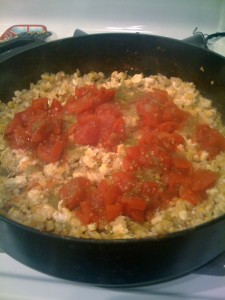
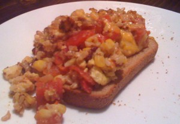

Every once in a while I get a creative cooking itch that I just have to scratch. Recently those itches have involved rice and cheese. Tonight I wanted to explore what I could do to use up some eggs that had been in the fridge for a while.
As I explored the cupboards I imagined an egg and rice hash that had a bit of kick to it. After exploring some recipes for ideas I began to create my new IlliMex Egg Hash.
INGREDIENTS:
- 7 eggs
- 1 cup of milk
- 2 tablespoons of Worcestershire sauce
- 3 cups of cooked rice (brown or white)
- black pepper
- 1 15oz can of corn, drained
- 1 7oz can of green salsa verde
- 1 16oz can of diced tomatoes, drained
- 2 cups of grated cheese
DIRECTIONS:

- Blend the eggs, milk, and Worcestershire sauce in a small bowl. Then cook the egg mixture as scrambled eggs in a large skillet over medium heat.
- Add the cooked rice and a drained can of corn to the cooked egg mixture. Add black pepper to taste. Brown the hash mixture for about 10 minutes over high heat.
- Once the hash has slightly browned, mix in the salsa verde and diced tomatoes. Simmer for about 5 minutes over medium heat.
- Top with shredded cheese and let sit for 10-15 minutes before serving.
- Serve over toast.
Serves 4 people.
OPTIONS TO CHANGE IT UP:
- Try hash browns instead of rice.
- Use traditional salsa or picante instead of the salsa verde and diced tomatoes.
- Add some ham or sausage to the hash mixture.
- Add onions or green peppers to the hash.
- Add some Tabasco sauce for a bit more kick.

Let me know if you try this off the cuff little hash recipe. Or shoot me ideas of ways to improve it. I’d love to hear your thoughts.

{kind=link}
{kind=link}
{kind=link}